PART 1 场景重建 真实房间 → 可训练的 3DGS 场景与物体资产
1.1 起点与转向起手用 Kiri Engine 做扫描重建 → 转向直接在真实采集帧上训练 3DGS。
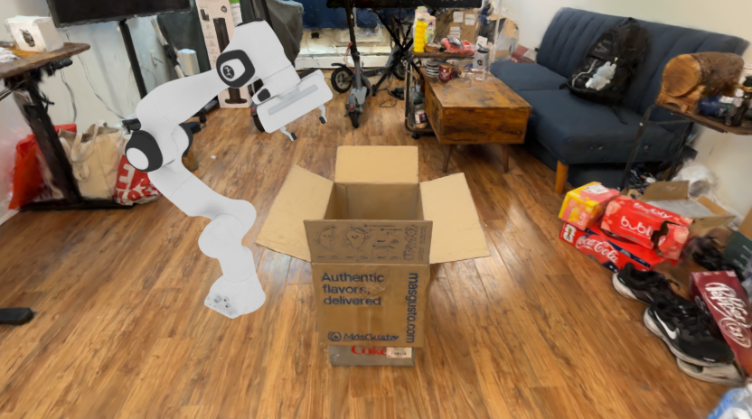
Kiri Engine 可视化位 由你提供素材后替换
起点：Kiri Engine 扫描 （占位）
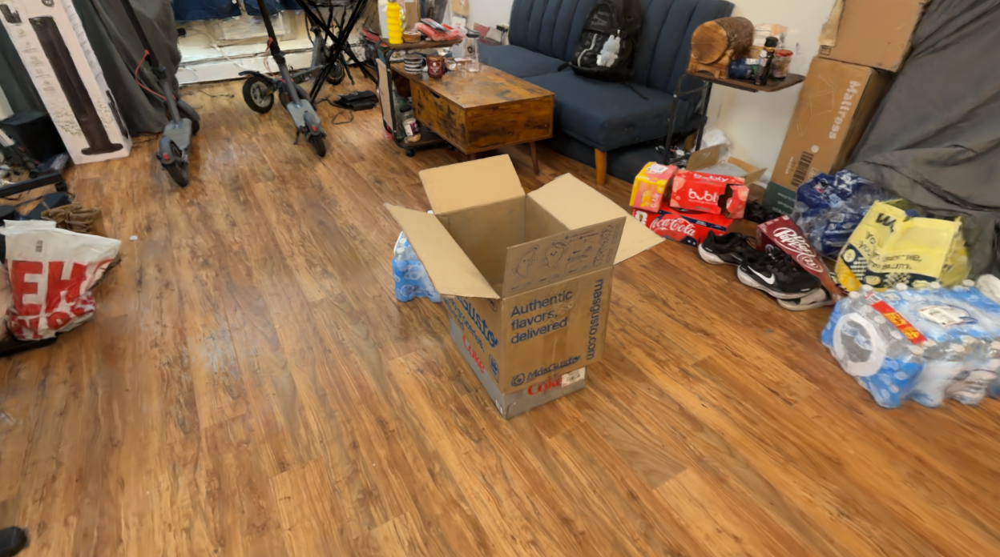
交互 viewer 待嵌入 box4_viewer_ba.html · 场景 3DGS
转向：直接训练 3DGS —— box4 场景重建（可自由浏览）
1.2 采集与训练技术栈iPhone Record3D 采集 → 转 COLMAP 格式 → nerfstudio / splatfacto 训练 3DGS。
采集 Record3D (iPhone Pro) RGB 1920×1440 · LiDAR 深度 256×192 · ARKit 位姿 · 30 fps
→
数据整备 r3d_to_colmap.py 抽帧 + 清晰度门 → cameras / images / points3D
→
位姿精修 COLMAP BA GPU SIFT · 分片并行匹配 · 三角化 + 全局 BA
→
训练 nerfstudio · splatfacto 位姿优化 + 双边网格 + 抗锯齿 → splat.ply
1.3 场景 3DGS 底座（现状：仍是瓶颈）场景重建质量目前还不够好 —— 后处理类方案试过，实际收益有限；结论是问题出在采集端。
稠密帧重训（3882 帧，6.6× 帧密度）没解决问题
工程加速：分片并行匹配 15 min （原 CPU 6.7 h）
下轮方向：fps 30 + splatfacto 扫描策略 （改采集，不改后处理）
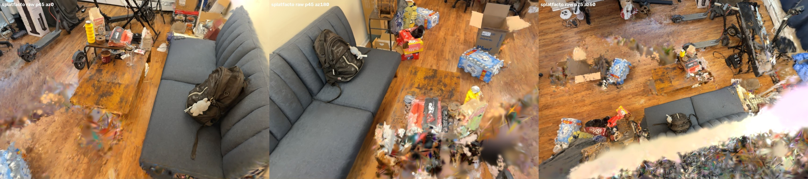
当前重建质量 （三视角）：主体可用，边缘与遮挡区仍有模糊、空洞和浮点
1.4 Limitation：其他场景重建不佳 → 采样策略要改box5 / bag1 / bag2 / hang1 / cross1 五个场景重建都不理想。定位到视角采样 ：这批采集是「盯细节」而非「求覆盖」。
实际采集片段 （bag1，快进）：镜头贴近物体反复绕拍
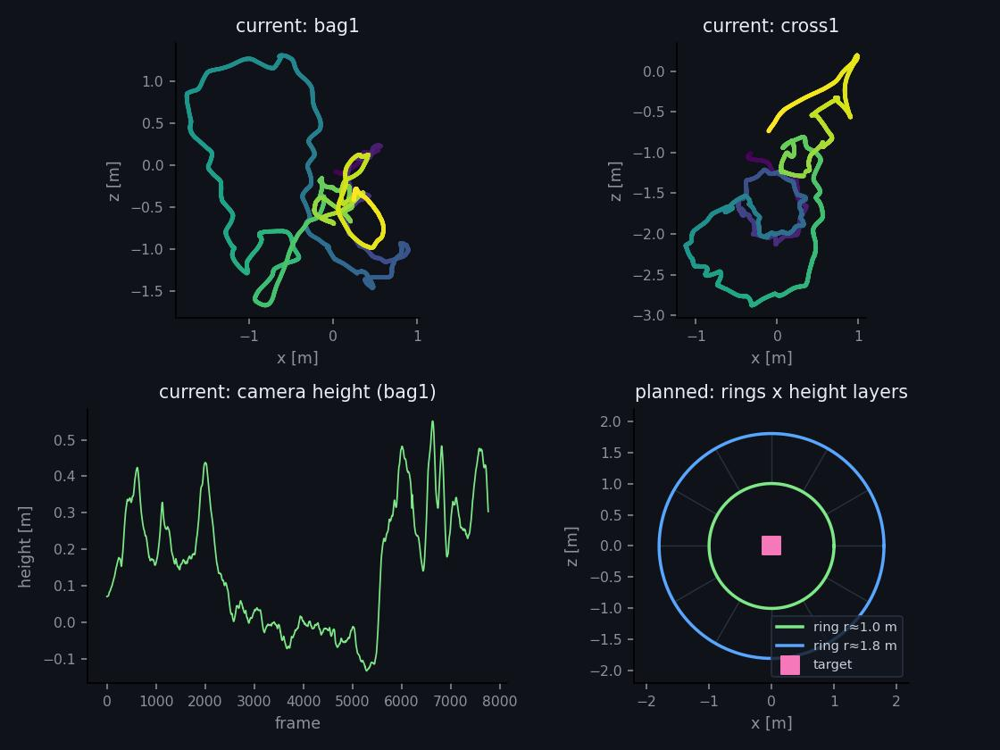
左/中 = 本次轨迹 （细节导向，局部密集、整体不闭合）· 右 = 下次策略 ：同心环 × 高度分层，先保覆盖再补细节
下一轮重拍：fps 30 + 最大覆盖优先 （内外双环 × 多高度层，保证每个表面被多个方向看到），再对重点物体补细节段。
1.5 物体资产提取（mesh）从场景自身帧重建物体 mesh，供物理/接触使用。
分割 SAM 3 单次提示 → 跨帧一致的物体掩码
→
深度 gsplat 首表面渲染 把物体高斯不透明度置 1，取第一表面深度
→
融合 Open3D ScalableTSDF 4 mm 体素 · 76 视角带色融合
→
导出 trimesh → .glb 带顶点色 · 规范化到物体坐标系
高斯 → mesh 3.7 mm （p90 8.7 mm）
mesh → 高斯 7.1 mm
印刷字可读 · 四片翻盖形态完整
1.6 环境光提取 · rebake light解出真实灯光 → 让插入的机器人接受同一套光照并投出真实阴影。
84–94% 帧过曝 → 间接 解光强
真实阴影 1–2 万像素 ／视角
物体增益 1.6–2.3× （印证「贴图是外观不是反照率」）
PART 2 FK 3DGS 重训练 机器人本体 3DGS 的重建与改进（本部分由另一位同学负责）
2.1 训练配方重设计（E 配方）旧主干靠一堆末端补丁才能保住夹爪；新配方把补丁全撤掉，只改初始化 + 约束 + 训练流程。
初始化 mesh 表面构造 CAD 面片直接撒高斯，材质色写进 SH 直流项 —— 起点就是正确形状
→
几何约束 bounded + 每面保底 高斯只能在所属面片 3 mm 内漂移；每面片保留最后一个高斯，末端不会被剪光
→
训练 随机背景 + 多视 batch 深度掩码合成随机底色抑制漂浮；每步 6 视角 + SH 逐级放开 + 位置学习率余弦退火
→
一致性 训练=评测=消费端 光栅化模式两端必须一致（错配实测 −3.4 dB）；相机内参从数据反推，不写死
2.2 相对线上旧版，肉眼差多少（Franka）CHORD 目前用的还是 4 月那版 franka 权重 （219,608 高斯）。同一批 100 个 novel pose、同一相机，重新渲一遍摆在一起看。
夹爪区域 IoU 0.656 → 0.870
整机轮廓 IoU 0.925 → 0.966
全局 PSNR 31.89 → 33.07 dB
高斯数 220k → 205k （反而更省）
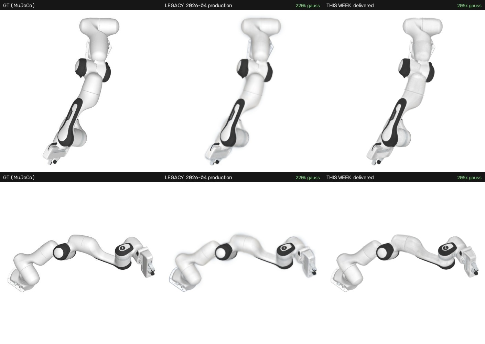
整臂：旧版（中）轮廓发虚、边缘带一圈光晕、关节处像被抹过一遍；本周版本（右）连杆分缝和面板线都在
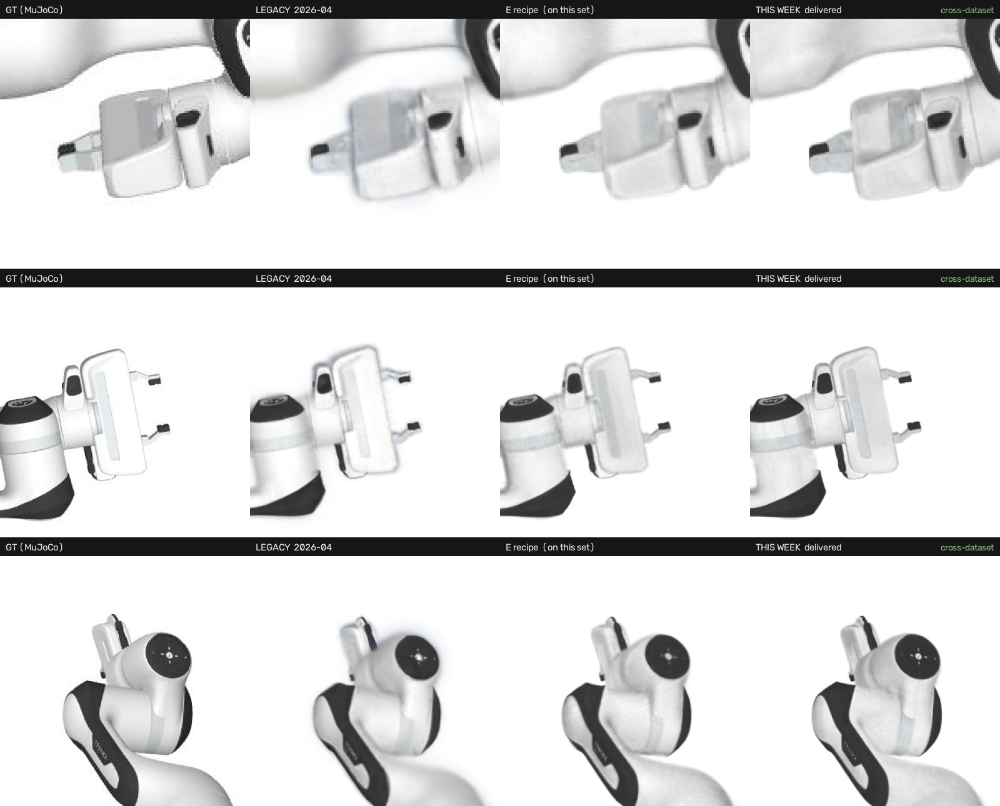
夹爪特写（差距最大的地方）：旧版 两根手指糊成一片、指尖飘着残影；本周交付版 （最右）指尖分离、金属件棱角清楚 —— 注意它还是跨数据集 渲染的（没在这批测试姿态上训过）
同一条 θ 轨迹、同一个环绕相机：左旧右新。整段轨迹里旧版一直带着一层糊边和外扩的光晕，新版轮廓始终干净
模型 全局 PSNR 机器人区 PSNR 轮廓 IoU 夹爪区 IoU 线上旧版（2026-04, 220k） 31.89 20.25 0.925 0.656 本周 E 配方（203k） 33.07 21.16 0.966 0.882 本周交付版（205k，跨数据集） 32.03 20.29 0.966 0.870
口径说明：夹爪区 IoU = 把 hand + 两指的高斯合起来 与 GT 掩码比。单看"每根手指自己的高斯"会受高斯归属影响（交付版有一部分指尖像素是由相邻 link 的高斯画出来的，per-link 0.48 但合成 0.87），合成口径才对得上肉眼。
2.3 新旧架构全量对决（Franka · 100 novel pose）同一批测试姿态、同一相机。全局 PSNR 看不出差别 —— 差别全在末端 。
夹爪指尖 per-link IoU 0.420 → 0.780
末端平均 IoU 0.593 → 0.822
轮廓 IoU 0.952 → 0.966
高斯数 375k → 203k （−46%）
全局 PSNR 33.42 → 33.07 （打平）
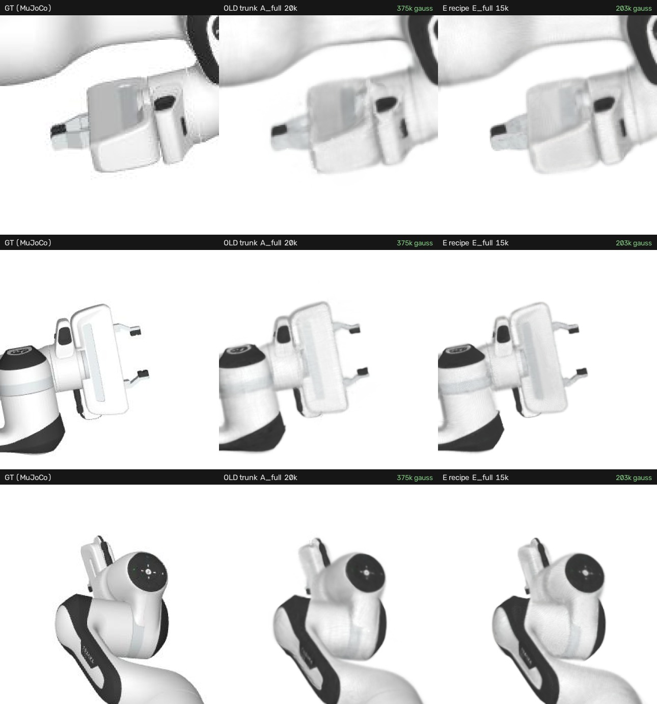
三行 = 三个测试姿态，按夹爪自动裁切。中列旧主干 ：两根手指糊成一团、边缘融化；右列新配方 ：指尖分离、缝隙可见 —— 而且训练步数更少、高斯数不到一半
旧栈要靠"末端特写训练层 + 夹爪专项微调"才能把这个指标救到 0.786；新配方零末端特殊化 直接到 0.780，那套补丁已整体退役。
2.4 相机药方：哪里糊，就给哪里配相机监督覆盖不到的地方一定糊。按部位补三类专属相机，逐轮把模糊区域打掉。
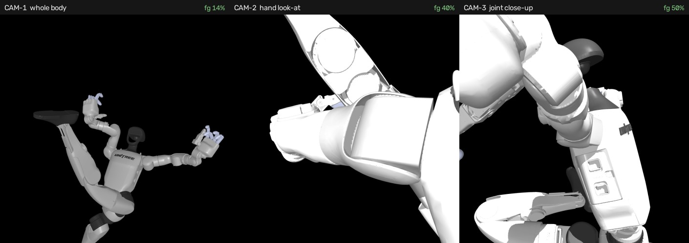
三类训练视角：整机 （构图基准）· 手部 look-at （指尖从糊团变成可数）· 关节特写 （肘/膝/肩轮询，近距离盯关节缝）
整机测试集 PSNR V4 29.54 → V6 29.64 dB
关节特写测试集 PSNR V4 20.72 → V6 20.93 dB
轮廓 IoU 0.9667 → 0.9687
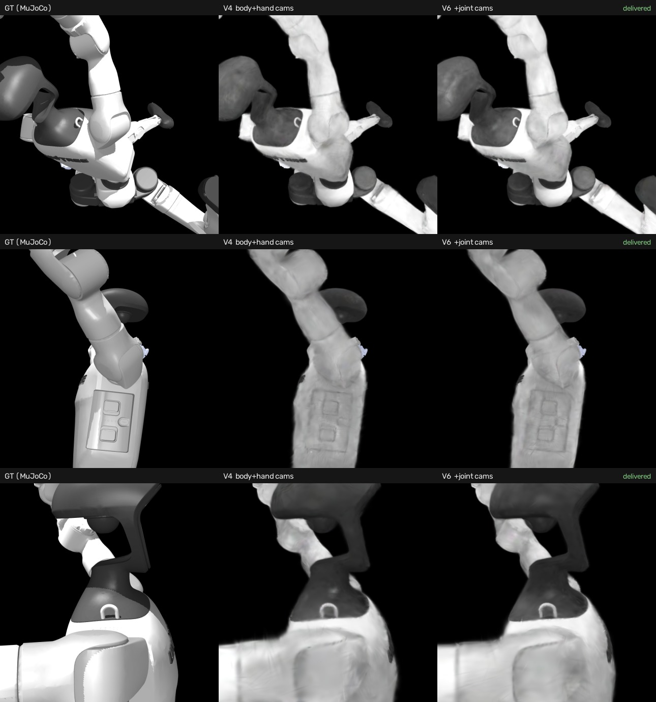
关节相机的收益（中 = 无关节相机，右 = 交付版）在指标上很小；但这张图更重要的是暴露上限 —— 贴到关节缝这个距离，两版都糊，GT 的螺丝/面板线全丢。这是当前表征的天花板，不是监督不够
2.5 面系绑定消融（负结果，已归档）试过把各向同性的 3 mm 球形约束换成沿面法向压扁的各向异性约束（切向 3 mm / 法向 1 mm）。
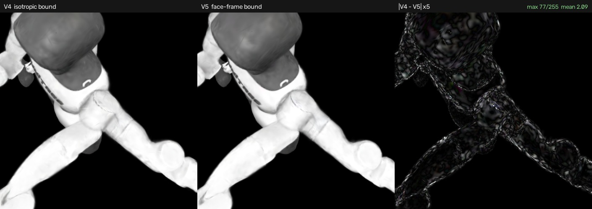
同姿态同相机：左/中肉眼无法区分，右为差分 ×5 放大 —— 只有微纹理噪声。差分最大 77/255、均值 2.09/255；180 张测试图上 PSNR 20.715 vs 20.718 dB —— 完全打平 。合成 FK 下 3 mm 的界根本没被顶到，所以这条约束不产生差异；实现留档，等真机数据（关节标定误差大）再启用
2.6 Mitsuba 外观域：必须一体训，不能只换外观把模型迁到物理渲染域时，最初做法是锁死几何、只重训外观 。对照实验证明这条路是错的。
冻结几何·只训外观（5k）39.98 dB
全参数一体训（同 5k）41.05 dB
一体训 10k 41.08 dB （已收敛）
Franka：旧 ckpt 38.46 → 定版 38.77 dB
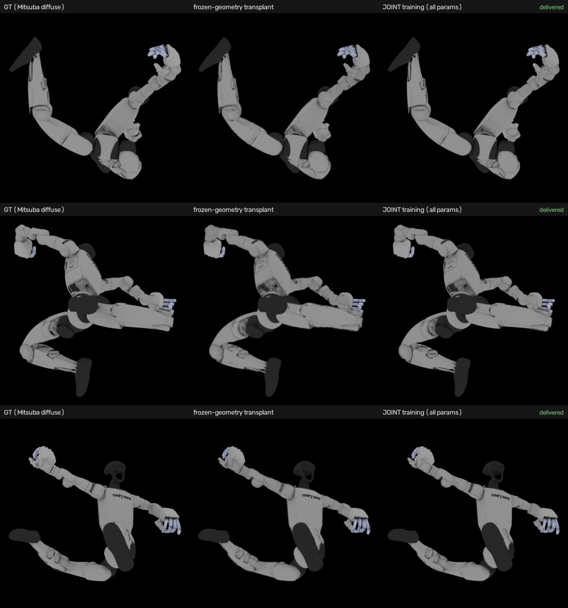
G1 · Mitsuba diffuse 域，三行 = 三个测试姿态。中列冻结几何 ：手掌/手指糊成一坨、边缘发虚；右列一体训 ：五指分离、轮廓贴合 GT。+1.07 dB 是同步数对照 （不是训得更久）
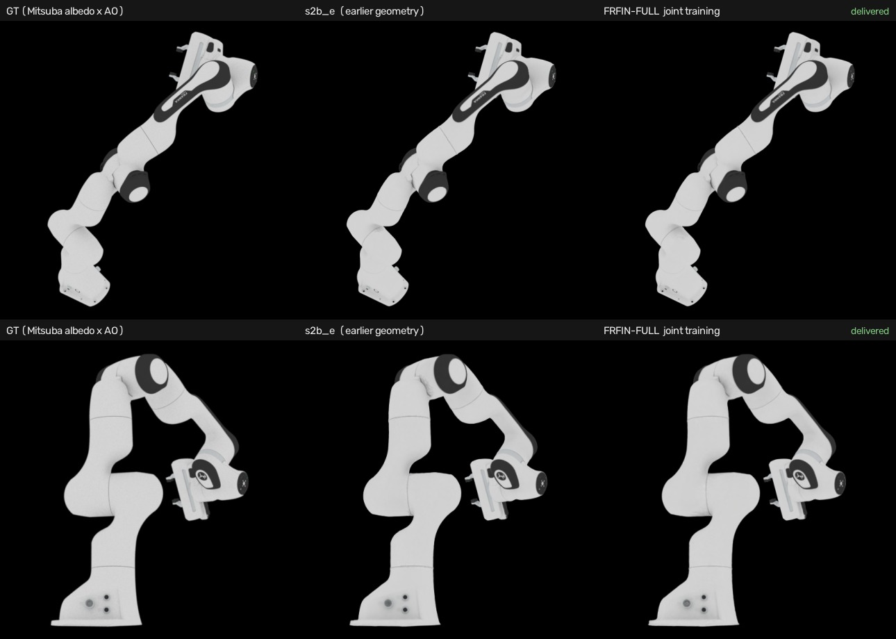
Franka 同一套流程：两版差距已很小（+0.31 dB），差异集中在夹爪
交付外观档 （diffuse 一体训）· θ 驱动 + 环绕
2.7 棚拍域（S3）：两个杠杆都没用加了 key/fill/rim 三灯棚拍环境后质量掉一档。做了 2×2 消融找原因：视角密度 和致密化窗口 都不是瓶颈。
6 机位 31.00 dB
12 机位 31.08 dB
6 机位 + 宽致密化 31.07 dB
12 机位 + 宽致密化 31.13 dB
四臂全部落在 ±0.14 dB 内（σ=2.4）
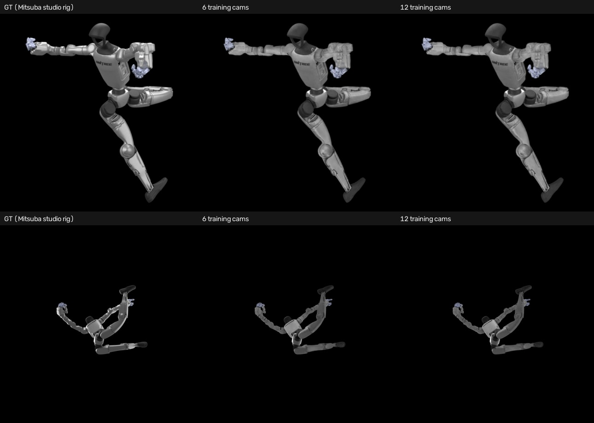
GT 的高光边缘和明暗过渡（左列）在两个模型上都被抹平，6 机位与 12 机位几乎无差别 —— 瓶颈是每个高斯的球谐容量（3 阶 16 系数）装不下窄高光瓣 ，不是数据量。棚拍档因此只作展示，交付档选 diffuse
2.8 本周交付物两台机器人、三份 mesh 资产 + 三份 θ 驱动 3DGS 权重，坐标系与 CHORD 场景对齐。
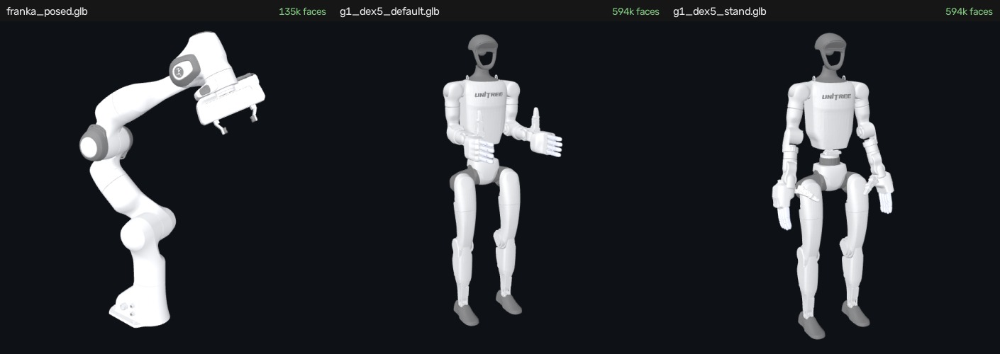
交付的 .glb （Y-up，基座/骨盆 link 在原点，顶点色）：Franka 作业姿态 · G1 出厂零位 · G1 自然站姿（掌心朝体，用"指尖微屈方向≈掌心法向"数值定的腕角）
G1 + Dex5 （69 关节）· 同一份权重，喂关节角即变形Franka （7 关节 + 夹爪）· 同上
交付 内容 路径 G1 几何 MuJoCo 域主线（含关节相机） outputs/g1dex5_v6_joint/ckpts/final.pt G1 外观 Mitsuba diffuse 一体训 ★ outputs/g1_s2diff_v6full/ckpts/final.pt Franka Mitsuba 一体训定版 ★ outputs/franka_s2b_frfin_full/ckpts/final.pt mesh 三份静态 .glb + 姿态 sidecar box4/chord_assets/{franka_posed, g1_dex5_default, g1_dex5_stand}.glb
下一步的主要矛盾已经定位清楚：不是监督不够，是表征容量不够 —— 关节缝、螺丝、窄高光这一档细节，靠加相机和加训练步数都推不动。
PART 3 最终组装与训练 场景 + 物体 + 机器人 → CHORD 训练与视频监督
3.1 机器人接入与交互 viewerθ 驱动的浏览器 viewer：场景静态、机器人实时 FK；相机位置持久化、可记录视角导出。
交互 viewer 待嵌入 box4_franka_compose.html
Franka θ 驱动拼装 viewer（7 关节 + 夹爪 + 基座）
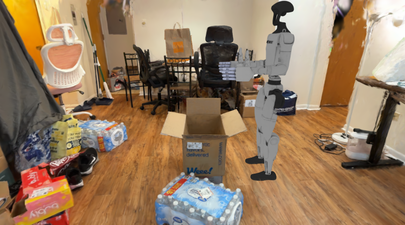
交互 viewer 待嵌入 box4_g1_compose.html
G1 + Dex5 viewer（69 关节按肢体分组）
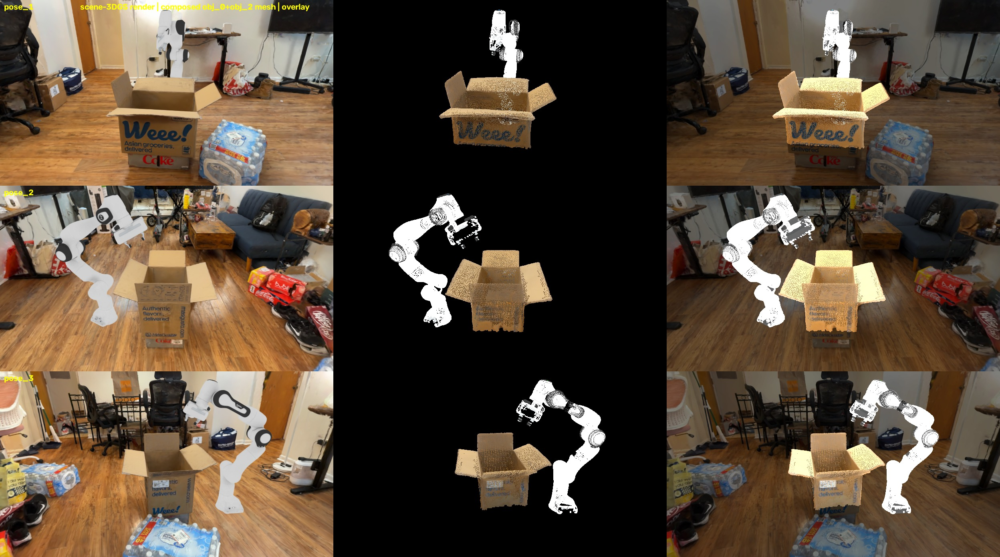
位姿/尺度校验 ：3DGS 渲染 · 组装后的 mesh · 叠加（三视角像素级重合）
3.2 CHORD 数据包组装与验证把真实场景拆成可训练的三个对象；三件套验证保证组装正确。
红 箱子 = 动态（控制点驱动）蓝 其余全场景 = 静态背景（105 万高斯）绿 机器人 = 插入对象
3.3 相机采样区间研究训练相机绕场景采样 —— 发现默认设置下约 1/4 的视角在给监督信号喂噪声 。
定案：Franka r1.5 + 方位角 [0,240]∪[330,360] ；G1 r1.5 + [50,250]∪[330,355] + 俯角 [−30,−5] 。
3.4 视频生成（Wan2.2 监督信号）用 GS 渲染帧作条件帧生成任务视频；prompt 从繁到简是关键转折。
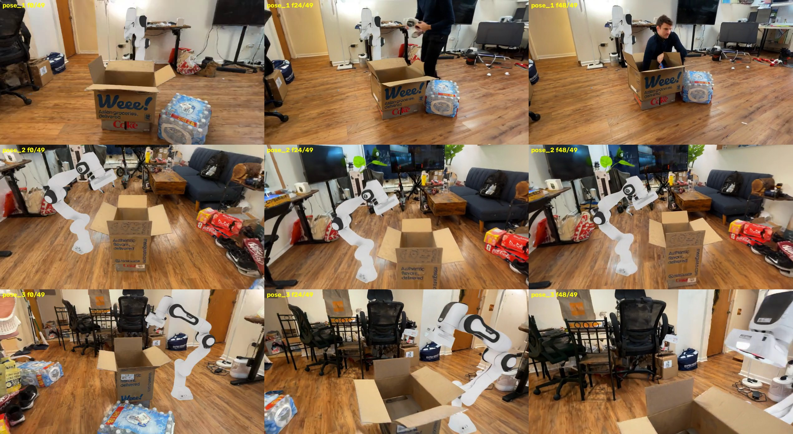
v1 失败 ：长 prompt + 大量负面词 → 人手幻觉、机械臂融化、场景漂移
3.5 G1 人形机器人接入Dex5 五指手资产 → viewer → 双起手姿态 → 视频生成 → 数据包。
全高实测 1.288 m
腕高 0.81–0.91 m · 箱沿 0.51 m → 必须弯腰
stand 起手 优于 default
3.6 方法：灵巧手降维 + jac-lr 泛化让 Franka 那套训练技巧迁移到 69 自由度的人形 + 五指手。
3.7 训练结果12 个正式跑全部到达早停点；下面是训练过程与最终帧。
① 机器人表示法对照 · Franka
自由控制点 （机器人当普通可变形物体）θ-FK 驱动 （只优化关节角，结构不可破坏）
② 起手姿态对照 · G1
default 起手（前平举）stand 起手（垂臂）
③ 训练过程演进 · G1 eigengrasp + jac-lr
④ 8 格消融矩阵 · 全部最终结果
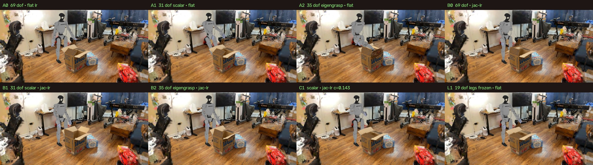
八格终帧总览（便于横向对比）
代号 手部自由度 学习率机制 可训练维 A0 全关节 平坦 69 A1 单标量闭合 平坦 31 A2 eigengrasp k=3 平坦 35 B0 全关节 jac-lr + keep-pace 69 B1 单标量闭合 jac-lr + keep-pace 31 B2 eigengrasp k=3 jac-lr + keep-pace 35 C1 单标量闭合 jac-lr（沿用 Franka 标定值） 31 L1 单标量闭合 + 腿冻结 平坦 19
⑤ 当前主要问题
接触
contact 不正确
手/夹爪与箱盖没有真正建立接触关系：存在穿插、悬空推动，动作看起来「隔空生效」。
材质
环境材质有待改进
场景表面缺少可分离的材质属性（粗糙度/反照率），插入物体与环境的观感一致性受限。
光照
光照未被很好解决
已能解出主光源并投出真实阴影，但整体一致性仍不足；是否为当前瓶颈尚不确定 ，需与接触问题分离验证。
周报 · Real2Sim direct-3DGS 线 · 2026-07-31 |
虚线框 = viewer 占位，后续替换为可交互页面